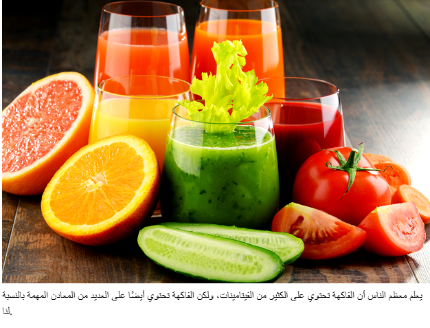

الفيتامينات والمعادن
يوجد 13 نوعًا مختلفًا من الفيتامينات التي يحتاجها الإنسان للبقاء على قيد الحياة. تُنتَج الفيتامينات في الحيوانات والنباتات، ولكل منها وظائف مختلفة في عمليات متعددة داخل الجسم. لا يستطيع الجسم إنتاج هذه الفيتامينات بكميات كافية، لذا نحتاج إلى الحصول عليها من خلال الغذاء. تتواجد الفيتامينات المختلفة في العديد من أنواع الأطعمة، وهذا هو أحد الأسباب التي تجعل التنوع الغذائي مهمًا.

المعادن هي عناصر أساسية توجد طبيعيًا في الأرض ونحصل عليها من خلال الطعام الذي ينمو في الطبيعة. بعض المعادن تُضاف أيضًا إلى بعض الأطعمة لزيادة قيمتها الغذائية. المعادن ضرورية للحياة لأنها تدخل في بناء جميع أجزاء الجسم. لا يستطيع الجسم إنتاج المعادن بنفسه، لذلك يجب أن نحصل عليها من خلال الغذاء.
ما يشترك فيه الفيتامينات والمعادن هو أن نقص أي منهما يؤدي إلى أمراض، غالبًا مع أعراض محددة.